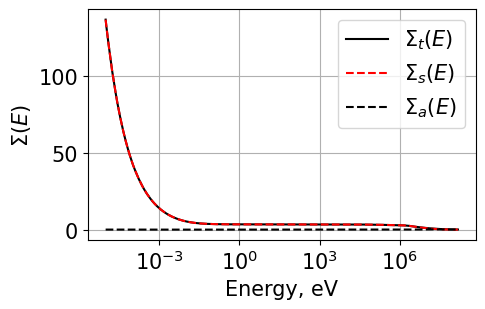

Jupyter Notebook for Transport Correction Factors¶
Questions 4 - 6¶
Question 4 - Transport Correction Factors¶
Solve for the transport correction factors in H-1 using a typical fission spectrum and a point source at 19 MeV
First do some imports
# Imports
import matplotlib.pyplot as plt
import numpy as np
import numpy as np
import pandas as pd
import time
from transportcorrection import energyInterpolation, Plot1d
from transportcorrection import infFluxSolver, TRCSolver, plot_matrix, solveFluxAndTRC
# Plot settings
plt.rcParams['font.size'] = 12
plt.rcParams['figure.figsize'] = [5, 3] # Set default figure size
Setup the source and then pass all the data into solveFluxAndTRC()
This function first solves for the flux, then it passes the flux into another function to solve for the Transport correction ratio
2x plots are generated - the first is the matrix used to solve for the flux - we can analyze how dense it is and its shape.
For H-1, scattering is possible for all energies above E - the matrix should therefore be fully upper triangular.
However, for H-2, scattering will depend on the value of \(\alpha\):
$ :raw-latex:`alpha `E’ < E < E’$
# Watt fission spectrum source
dataFile = "./database/H1.csv"
data = pd.read_csv(dataFile)
energy = np.array(data['energy'])
src = np.exp(-energy/9.880E+05)*np.sinh((2.249E-06*energy)**0.5)
src = src / src.sum()
# Now solve using the below settings:
energy1,tau_CHI,tau0,flx = solveFluxAndTRC(dataPath=dataFile,
isotopeMass=1.0,
energyN=3000,
lowerE=1,
upperE=19e6,
src=src,
rule='trap',
plotFluxMatrix=True,
plotTaus=True)
Time to solve for flux is 0.3350539207458496
Flux calculation took 0.3354883 s
Tau calculation took 0.2996173 s
Total time is 0.6351154 s


# Point source
dataFile = "./database/H1.csv"
data = pd.read_csv(dataFile)
energy = np.array(data['energy'])
src = np.exp(-energy/9.880E+05)*np.sinh((2.249E-06*energy)**0.5)
src *= 0.0
src[-1] = 1.0
src = src / src.sum()
# Now solve using the below settings:
energy1,tau_POINT,tau0,flx = solveFluxAndTRC(dataPath=dataFile,
isotopeMass=1.0,
energyN=3000,
lowerE=1,
upperE=19e6,
src=src,
rule='trap',
plotFluxMatrix=True,
plotTaus=True)
Time to solve for flux is 0.48505210876464844
Flux calculation took 0.4855015 s
Tau calculation took 0.4006200 s
Total time is 0.8861315 s


# Plot both
Plot1d(energy1, tau_CHI, xlabel="Energy, eV", ylabel="$\\tau(E)$", fontsize=13, marker="k-", markerfill=False, markersize=3, legend='TCR(E) (fission spectrum)')
Plot1d(energy1, tau_POINT, xlabel="Energy, eV", ylabel="$\\tau(E)$", fontsize=13, marker="b-", markerfill=False, markersize=3, legend='TCR(E) (19 MeV source)')
Plot1d(energy1, tau0, xlabel="Energy, eV", ylabel="$\\tau(E)$", fontsize=13, marker="--r", markerfill=False, markersize=3, legend='1/3')
plt.grid()
plt.savefig('results/tcr_H1_q4.png', bbox_inches='tight')
Question 5 - H2 implementation¶
Now we do the same as above but for H-2. Note the matrix is now much different. The TCR is also plotted.
# Watt fission spectrum source
dataFile = "./database/H2.csv"
data = pd.read_csv(dataFile)
energy = np.array(data['energy'])
src = np.exp(-energy/9.880E+05)*np.sinh((2.249E-06*energy)**0.5)
src = src / src.sum()
# Now solve using the below settings:
energy1,tau_CHI,tau0,flx = solveFluxAndTRC(dataPath=dataFile,
isotopeMass=2.0,
energyN=3000,
lowerE=1,
upperE=19e6,
src=src,
rule='trap',
plotFluxMatrix=True,
plotTaus=True)
plt.grid()
plt.savefig('./results/H2_q5.png', bbox_inches='tight')
Time to solve for flux is 0.2839996814727783
Flux calculation took 0.2844796 s
Tau calculation took 0.3277695 s
Total time is 0.6122637 s

The cross sections are now plotted:¶
# Get xs for plotting
dataFile = "./database/H2.csv"
data = pd.read_csv(dataFile)
energy = np.array(data['energy'])
scattering = np.array(data['scattering'])
total = np.array(data['total'])
# Plot
Plot1d(energy, total, xlabel="Energy, eV", ylabel="$\Sigma(E)$", fontsize=15, marker="k-", markerfill=False, markersize=3, legend="$\Sigma_t(E)$")
Plot1d(energy, scattering, xlabel="Energy, eV", ylabel="$\Sigma(E)$", fontsize=15, marker="r--", markerfill=False, markersize=3, legend="$\Sigma_s(E)$")
Plot1d(energy, total-scattering, xlabel="Energy, eV", ylabel="$\Sigma(E)$", fontsize=15, marker="k--", markerfill=False, markersize=3, legend="$\Sigma_a(E)$")
plt.grid()
plt.savefig('./results/XS_q5.png', bbox_inches='tight')
<>:9: SyntaxWarning: invalid escape sequence 'S' <>:9: SyntaxWarning: invalid escape sequence 'S' <>:10: SyntaxWarning: invalid escape sequence 'S' <>:10: SyntaxWarning: invalid escape sequence 'S' <>:11: SyntaxWarning: invalid escape sequence 'S' <>:11: SyntaxWarning: invalid escape sequence 'S' <>:9: SyntaxWarning: invalid escape sequence 'S' <>:9: SyntaxWarning: invalid escape sequence 'S' <>:10: SyntaxWarning: invalid escape sequence 'S' <>:10: SyntaxWarning: invalid escape sequence 'S' <>:11: SyntaxWarning: invalid escape sequence 'S' <>:11: SyntaxWarning: invalid escape sequence 'S' /tmp/ipykernel_2144650/4054233365.py:9: SyntaxWarning: invalid escape sequence 'S' Plot1d(energy, total, xlabel="Energy, eV", ylabel="$Sigma(E)$", fontsize=15, marker="k-", markerfill=False, markersize=3, legend="$Sigma_t(E)$") /tmp/ipykernel_2144650/4054233365.py:9: SyntaxWarning: invalid escape sequence 'S' Plot1d(energy, total, xlabel="Energy, eV", ylabel="$Sigma(E)$", fontsize=15, marker="k-", markerfill=False, markersize=3, legend="$Sigma_t(E)$") /tmp/ipykernel_2144650/4054233365.py:10: SyntaxWarning: invalid escape sequence 'S' Plot1d(energy, scattering, xlabel="Energy, eV", ylabel="$Sigma(E)$", fontsize=15, marker="r--", markerfill=False, markersize=3, legend="$Sigma_s(E)$") /tmp/ipykernel_2144650/4054233365.py:10: SyntaxWarning: invalid escape sequence 'S' Plot1d(energy, scattering, xlabel="Energy, eV", ylabel="$Sigma(E)$", fontsize=15, marker="r--", markerfill=False, markersize=3, legend="$Sigma_s(E)$") /tmp/ipykernel_2144650/4054233365.py:11: SyntaxWarning: invalid escape sequence 'S' Plot1d(energy, total-scattering, xlabel="Energy, eV", ylabel="$Sigma(E)$", fontsize=15, marker="k--", markerfill=False, markersize=3, legend="$Sigma_a(E)$") /tmp/ipykernel_2144650/4054233365.py:11: SyntaxWarning: invalid escape sequence 'S' Plot1d(energy, total-scattering, xlabel="Energy, eV", ylabel="$Sigma(E)$", fontsize=15, marker="k--", markerfill=False, markersize=3, legend="$Sigma_a(E)$")
Q6 Simpsons Rule¶
First we run _test_numerical_integration() to integrate the following polynomial using both trapezoid and simpsons rule’s for integration.
\(f(x) = x^3 +5x^2 -2.125x - 1.1521\)
And the exact result is:
\(\int_{-10}^{10}f(x)dx = 3310.291333333333\)
Since Simpson’s rule integrates polynomials of up to and including degree three exactly, then we should get exact results when using Simpson’s rule here
Simpsons rule requires an even number of ‘bins’ but can be used with an odd number of bins which we have also implemented - when using an odd number of bins integration will be ‘close’ but not exact - whereas an even number of bins will provide the exact result
See: Composite Simpson’s rule for irregularly spaced data¶
https://en.wikipedia.org/wiki/Simpson%27s_rule
We can run the below cell to run a variety of integration tests to observe the accuracy of the two implemented integration schemes
# First we test the implemented numerical integration
# functions to prove to ourselves that our methods
# are not gibberish since latest code update
from transportcorrection import _test_numerical_integration
_test_numerical_integration()
Now running numerical integration for various settings ...
Simpsons rule with even N should be exact since it is of low enough polynomial order.
Exact: 3310.291333333333
Simpsons Rule Odd N: 3316.387964944368 | time: 0.00010156631469726562
Simpsons Rule Even N: 3310.291333333333 | time: 5.5789947509765625e-05
Trapezoid Rule N=10: 3376.9579999999996 | time: 5.0067901611328125e-05
Trapezoid Rule N=20: 3326.958 | time: 4.8160552978515625e-05
Trapezoid Rule N=30: 3317.6987407407405 | time: 4.9591064453125e-05
Trapezoid Rule N=40: 3314.4579999999996 | time: 5.507469177246094e-05
Trapezoid Rule N=50: 3312.9579999999996 | time: 5.1021575927734375e-05
Trapezoid Rule N=1000: 3310.2980133533592 | time: 0.0008146762847900391
Trapezoid Rule N=3000: 3310.292074568148 | time: 0.00018477439880371094
Simpsons Rule N=3000: 3310.2913333333336 | time: 0.0015516281127929688
Simpsons Rule N=2999: 3310.2913333338333 | time: 0.0015654563903808594
Now running a bunch of different calculations to compare accuracy/time.¶
# Now we run both trapezoid and simpsons rule for a variety of N values - 25,50,100,300
# We can compare the accuracy and runtimes of each.
# Watt fission spectrum source
dataFile = "./database/H1.csv"
data = pd.read_csv(dataFile)
energy = np.array(data['energy'])
src = np.exp(-energy/9.880E+05)*np.sinh((2.249E-06*energy)**0.5)
src = src / src.sum()
# SIMPSONS INTEGRATION RULE
print("SIMPSONS N=25")
energyS_25, tauS_25, tau0_25, _ = solveFluxAndTRC(dataPath="./database/H1.csv",
isotopeMass=1.0,
energyN=26,
lowerE=1,
upperE=19e6,
src=src,
rule='simp',
plotFluxMatrix=False,
plotTaus=False)
print("SIMPSONS N=50")
energyS_50, tauS_50, _, _ = solveFluxAndTRC(dataPath="./database/H1.csv",
isotopeMass=1.0,
energyN=51,
lowerE=1,
upperE=19e6,
src=src,
rule='simp',
plotFluxMatrix=False,
plotTaus=False)
print("SIMPSONS N=100")
energyS_100, tauS_100, _, _ = solveFluxAndTRC(dataPath="./database/H1.csv",
isotopeMass=1.0,
energyN=101,
lowerE=1,
upperE=19e6,
src=src,
rule='simp',
plotFluxMatrix=False,
plotTaus=False)
print("SIMPSONS N=300")
energyS_300, tauS_300, _, _ = solveFluxAndTRC(dataPath="./database/H1.csv",
isotopeMass=1.0,
energyN=301,
lowerE=1,
upperE=19e6,
src=src,
rule='simp',
plotFluxMatrix=False,
plotTaus=False)
print("SIMPSONS N=1000")
energyS_1000, tauS_1000, _, _ = solveFluxAndTRC(dataPath="./database/H1.csv",
isotopeMass=1.0,
energyN=1001,
lowerE=1,
upperE=19e6,
src=src,
rule='simp',
plotFluxMatrix=False,
plotTaus=False)
print("SIMPSONS N=3000")
energyS_3000, tauS_3000, _, _ = solveFluxAndTRC(dataPath="./database/H1.csv",
isotopeMass=1.0,
energyN=3001,
lowerE=1,
upperE=19e6,
src=src,
rule='simp',
plotFluxMatrix=False,
plotTaus=False)
print("SIMPSONS N=5000")
energyS_5000, tauS_5000, _, _ = solveFluxAndTRC(dataPath="./database/H1.csv",
isotopeMass=1.0,
energyN=5001,
lowerE=1,
upperE=19e6,
src=src,
rule='simp',
plotFluxMatrix=False,
plotTaus=False)
print("SIMPSONS N=10000")
energyS_10000, tauS_10000, _, _ = solveFluxAndTRC(dataPath="./database/H1.csv",
isotopeMass=1.0,
energyN=10001,
lowerE=1,
upperE=19e6,
src=src,
rule='simp',
plotFluxMatrix=False,
plotTaus=False)
# TRAPEZOID INTEGRATION RULE
print("TRAPEZOID N=25")
energyT_25, tauT_25, _, _ = solveFluxAndTRC(dataPath="./database/H1.csv",
isotopeMass=1.0,
energyN=26,
lowerE=1,
upperE=19e6,
src=src,
rule='trap',
plotFluxMatrix=False,
plotTaus=False)
print("TRAPEZOID N=50")
energyT_50, tauT_50, _, _ = solveFluxAndTRC(dataPath="./database/H1.csv",
isotopeMass=1.0,
energyN=51,
lowerE=1,
upperE=19e6,
src=src,
rule='trap',
plotFluxMatrix=False,
plotTaus=False)
print("TRAPEZOID N=100")
energyT_100, tauT_100, _, _ = solveFluxAndTRC(dataPath="./database/H1.csv",
isotopeMass=1.0,
energyN=101,
lowerE=1,
upperE=19e6,
src=src,
rule='trap',
plotFluxMatrix=False,
plotTaus=False)
print("TRAPEZOID N=300")
energyT_300, tauT_300, _, _ = solveFluxAndTRC(dataPath="./database/H1.csv",
isotopeMass=1.0,
energyN=301,
lowerE=1,
upperE=19e6,
src=src,
rule='trap',
plotFluxMatrix=False,
plotTaus=False)
print("TRAPEZOID N=1000")
energyT_1000, tauT_1000, _, _ = solveFluxAndTRC(dataPath="./database/H1.csv",
isotopeMass=1.0,
energyN=1001,
lowerE=1,
upperE=19e6,
src=src,
rule='trap',
plotFluxMatrix=False,
plotTaus=False)
print("TRAPEZOID N=3000")
energyT_3000, tauT_3000, _, _ = solveFluxAndTRC(dataPath="./database/H1.csv",
isotopeMass=1.0,
energyN=3001,
lowerE=1,
upperE=19e6,
src=src,
rule='trap',
plotFluxMatrix=False,
plotTaus=False)
print("TRAPEZOID N=5000")
energyT_5000, tauT_5000, _, _ = solveFluxAndTRC(dataPath="./database/H1.csv",
isotopeMass=1.0,
energyN=5001,
lowerE=1,
upperE=19e6,
src=src,
rule='trap',
plotFluxMatrix=False,
plotTaus=False)
print("TRAPEZOID N=10000")
energyT_10000, tauT_10000, _, _ = solveFluxAndTRC(dataPath="./database/H1.csv",
isotopeMass=1.0,
energyN=10001,
lowerE=1,
upperE=19e6,
src=src,
rule='trap',
plotFluxMatrix=False,
plotTaus=False)
SIMPSONS N=25
Time to solve for flux is 0.0003097057342529297
Flux calculation took 0.0003352 s
Tau calculation took 0.0004151 s
Total time is 0.0007551 s
SIMPSONS N=50
Time to solve for flux is 0.0007848739624023438
Flux calculation took 0.0008056 s
Tau calculation took 0.0009344 s
Total time is 0.0017433 s
SIMPSONS N=100
Time to solve for flux is 0.003744840621948242
Flux calculation took 0.0037749 s
Tau calculation took 0.0052822 s
Total time is 0.0090611 s
SIMPSONS N=300
Time to solve for flux is 0.0516057014465332
Flux calculation took 0.0516844 s
Tau calculation took 0.0488150 s
Total time is 0.1005077 s
SIMPSONS N=1000
Time to solve for flux is 0.2944059371948242
Flux calculation took 0.2949142 s
Tau calculation took 0.3197660 s
Total time is 0.6147103 s
SIMPSONS N=3000
Time to solve for flux is 2.4245777130126953
Flux calculation took 2.4249735 s
Tau calculation took 2.4539604 s
Total time is 4.8789430 s
SIMPSONS N=5000
Time to solve for flux is 7.581923484802246
Flux calculation took 7.5824642 s
Tau calculation took 7.3160963 s
Total time is 14.8985806 s
SIMPSONS N=10000
Time to solve for flux is 31.9954354763031
Flux calculation took 31.9959593 s
Tau calculation took 32.4131505 s
Total time is 64.4091260 s
TRAPEZOID N=25
Time to solve for flux is 0.00023484230041503906
Flux calculation took 0.0002649 s
Tau calculation took 0.0003147 s
Total time is 0.0005846 s
TRAPEZOID N=50
Time to solve for flux is 0.0003452301025390625
Flux calculation took 0.0003672 s
Tau calculation took 0.0005801 s
Total time is 0.0009511 s
TRAPEZOID N=100
Time to solve for flux is 0.0011105537414550781
Flux calculation took 0.0011399 s
Tau calculation took 0.0013423 s
Total time is 0.0025089 s
TRAPEZOID N=300
Time to solve for flux is 0.004845142364501953
Flux calculation took 0.0048769 s
Tau calculation took 0.0065112 s
Total time is 0.0113921 s
TRAPEZOID N=1000
Time to solve for flux is 0.030581951141357422
Flux calculation took 0.0306883 s
Tau calculation took 0.0378132 s
Total time is 0.0685101 s
TRAPEZOID N=3000
Time to solve for flux is 0.3781712055206299
Flux calculation took 0.3785994 s
Tau calculation took 0.3330069 s
Total time is 0.7116206 s
TRAPEZOID N=5000
Time to solve for flux is 1.015740156173706
Flux calculation took 1.0167367 s
Tau calculation took 1.8223386 s
Total time is 2.8391080 s
TRAPEZOID N=10000
Time to solve for flux is 7.815183401107788
Flux calculation took 7.8157234 s
Tau calculation took 7.9559760 s
Total time is 15.7717149 s
And plotting results …¶
Plot1d(energyT_25, tauT_25, xlabel="Energy, eV", ylabel="$\\tau(E)$", fontsize=15, marker="k-", markerfill=False, markersize=3, legend='Trap. N=25')
Plot1d(energyS_25, tauS_25, xlabel="Energy, eV", ylabel="$\\tau(E)$", fontsize=15, marker="r--", markerfill=False, markersize=3, legend='Simp. N=25')
Plot1d(energyS_25, tau0_25, xlabel="Energy, eV", ylabel="$\\tau(E)$", fontsize=15, marker="k--", markerfill=False, markersize=3, legend='$\\tau_0$')
plt.savefig('./results/q6_25.png', bbox_inches='tight')
Plot1d(energyT_50, tauT_50, xlabel="Energy, eV", ylabel="$\\tau(E)$", fontsize=15, marker="k-", markerfill=False, markersize=3, legend='Trap. N=50')
Plot1d(energyS_50, tauS_50, xlabel="Energy, eV", ylabel="$\\tau(E)$", fontsize=15, marker="r--", markerfill=False, markersize=3, legend='Simp. N=50')
Plot1d(energyS_25, tau0_25, xlabel="Energy, eV", ylabel="$\\tau(E)$", fontsize=15, marker="k--", markerfill=False, markersize=3, legend='$\\tau_0$')
plt.savefig('./results/q6_50.png', bbox_inches='tight')
Plot1d(energyT_100, tauT_100, xlabel="Energy, eV", ylabel="$\\tau(E)$", fontsize=15, marker="k-", markerfill=False, markersize=3, legend='Trap. N=100')
Plot1d(energyS_100, tauS_100, xlabel="Energy, eV", ylabel="$\\tau(E)$", fontsize=15, marker="r--", markerfill=False, markersize=3, legend='Simp. N=100')
Plot1d(energyS_25, tau0_25, xlabel="Energy, eV", ylabel="$\\tau(E)$", fontsize=15, marker="k--", markerfill=False, markersize=3, legend='$\\tau_0$')
plt.savefig('./results/q6_100.png', bbox_inches='tight')

Plot1d(energyT_300, tauT_300, xlabel="Energy, eV", ylabel="$\\tau(E)$", fontsize=15, marker="k-", markerfill=False, markersize=3, legend='Trap. N=300')
Plot1d(energyS_300, tauS_300, xlabel="Energy, eV", ylabel="$\\tau(E)$", fontsize=15, marker="r--", markerfill=False, markersize=3, legend='Simp. N=300')
Plot1d(energyS_25, tau0_25, xlabel="Energy, eV", ylabel="$\\tau(E)$", fontsize=15, marker="k--", markerfill=False, markersize=3, legend='$\\tau_0$')
plt.savefig('./results/q6_300.png', bbox_inches='tight')
Plot1d(energyT_10000, tauT_10000, xlabel="Energy, eV", ylabel="$\\tau(E)$", fontsize=15, marker="k-", markerfill=False, markersize=3, legend='Trap. N=300')
Plot1d(energyS_10000, tauS_10000, xlabel="Energy, eV", ylabel="$\\tau(E)$", fontsize=15, marker="r--", markerfill=False, markersize=3, legend='Simp. N=300')
Plot1d(energyS_25, tau0_25, xlabel="Energy, eV", ylabel="$\\tau(E)$", fontsize=15, marker="k--", markerfill=False, markersize=3, legend='$\\tau_0$')
plt.savefig('./results/q6_10000.png', bbox_inches='tight')

# Plotting all the Trapezoid rules integrations
plt.rcParams['figure.figsize'] = [6, 4] # Set default figure size
Plot1d(energyT_25, tauT_25, xlabel="Energy, eV", ylabel="$\\tau(E)$", fontsize=15, marker="r-", markerfill=False, markersize=3, legend='Trap. N=25')
Plot1d(energyT_50, tauT_50, xlabel="Energy, eV", ylabel="$\\tau(E)$", fontsize=15, marker="b-", markerfill=False, markersize=3, legend='Trap. N=50')
Plot1d(energyT_100, tauT_100, xlabel="Energy, eV", ylabel="$\\tau(E)$", fontsize=15, marker="g-", markerfill=False, markersize=3, legend='Trap. N=100')
Plot1d(energyT_300, tauT_300, xlabel="Energy, eV", ylabel="$\\tau(E)$", fontsize=15, marker="m-", markerfill=False, markersize=3, legend='Trap. N=300')
Plot1d(energyT_10000, tauT_10000, xlabel="Energy, eV", ylabel="$\\tau(E)$", fontsize=15, marker="k-", markerfill=False, markersize=3, legend='Trap. N=10000')
Plot1d(energyS_25, tau0_25, xlabel="Energy, eV", ylabel="$\\tau(E)$", fontsize=15, marker="k--", markerfill=False, markersize=3, legend='$\\tau_0$')
plt.grid()
plt.savefig('./results/q6_trap.png', bbox_inches='tight')

# Plotting all the simpsons rules integrations
# Note that the last two points are integrated using trapezoid rule (since simpsons rule needs 3x datapoints)
# Thus there is a discontinuity
plt.rcParams['figure.figsize'] = [6, 4] # Set default figure size
Plot1d(energyS_25, tauS_25, xlabel="Energy, eV", ylabel="$\\tau(E)$", fontsize=15, marker="r-", markerfill=False, markersize=3, legend='Simp. N=25')
Plot1d(energyS_50, tauS_50, xlabel="Energy, eV", ylabel="$\\tau(E)$", fontsize=15, marker="b-", markerfill=False, markersize=3, legend='Simp. N=50')
Plot1d(energyS_100, tauS_100, xlabel="Energy, eV", ylabel="$\\tau(E)$", fontsize=15, marker="g-", markerfill=False, markersize=3, legend='Simp. N=100')
Plot1d(energyS_300, tauS_300, xlabel="Energy, eV", ylabel="$\\tau(E)$", fontsize=15, marker="m-", markerfill=False, markersize=3, legend='Simp. N=300')
Plot1d(energyS_10000, tauS_10000, xlabel="Energy, eV", ylabel="$\\tau(E)$", fontsize=15, marker="k-", markerfill=False, markersize=3, legend='Simp. N=10000')
Plot1d(energyS_25, tau0_25, xlabel="Energy, eV", ylabel="$\\tau(E)$", fontsize=15, marker="k--", markerfill=False, markersize=3, legend='$\\tau_0$')
plt.grid()
plt.savefig('./results/q6_simp.png', bbox_inches='tight')

Lets observe why the runtimes are so different¶
First compare the weight matrices (they look very similar for each method)
from transportcorrection import _scatteringWeightGrabber
W_trap = _scatteringWeightGrabber(energy=energyT_10000,A=1.0,intRule='trap')
W_simp = _scatteringWeightGrabber(energy=energyT_10000,A=1.0,intRule='simp')
plot_matrix(W_trap, black_white=False)
plot_matrix(W_simp, black_white=False)


Then compare the time it takes to assemble the matrices (this is the likely reason….)¶
start = time.time()
W_trap = _scatteringWeightGrabber(energy=energyS_10000,A=1.0,intRule='trap')
end = time.time()
print("Trapezoid rule scattering matrix assembly time =", end-start)
start = time.time()
W_simp = _scatteringWeightGrabber(energy=energyS_10000,A=1.0,intRule='simp')
end = time.time()
print("Simpsons rule scattering matrix assembly time =", end-start)
time = 0.11665654182434082
time = 23.96303963661194